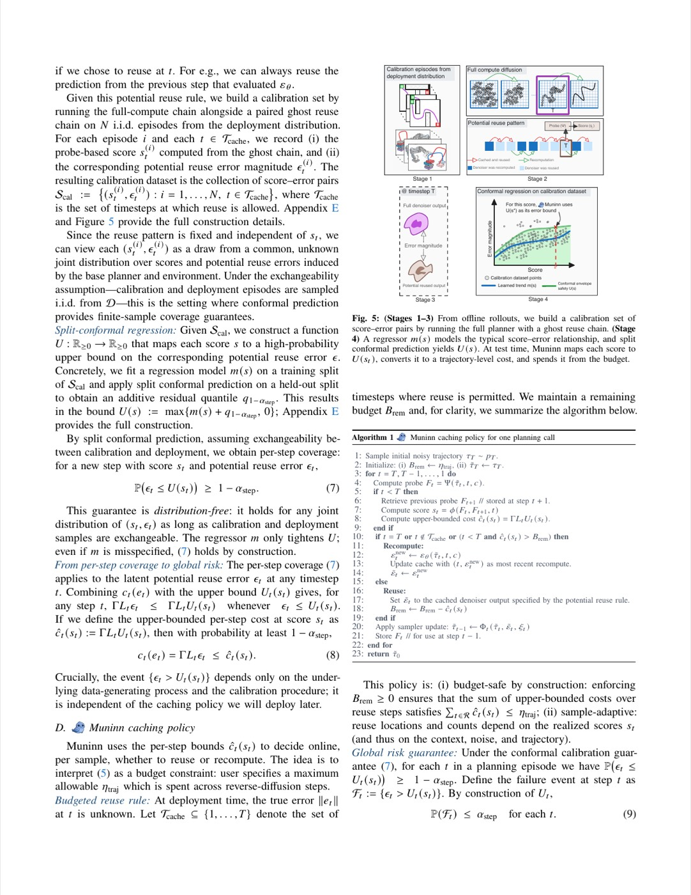
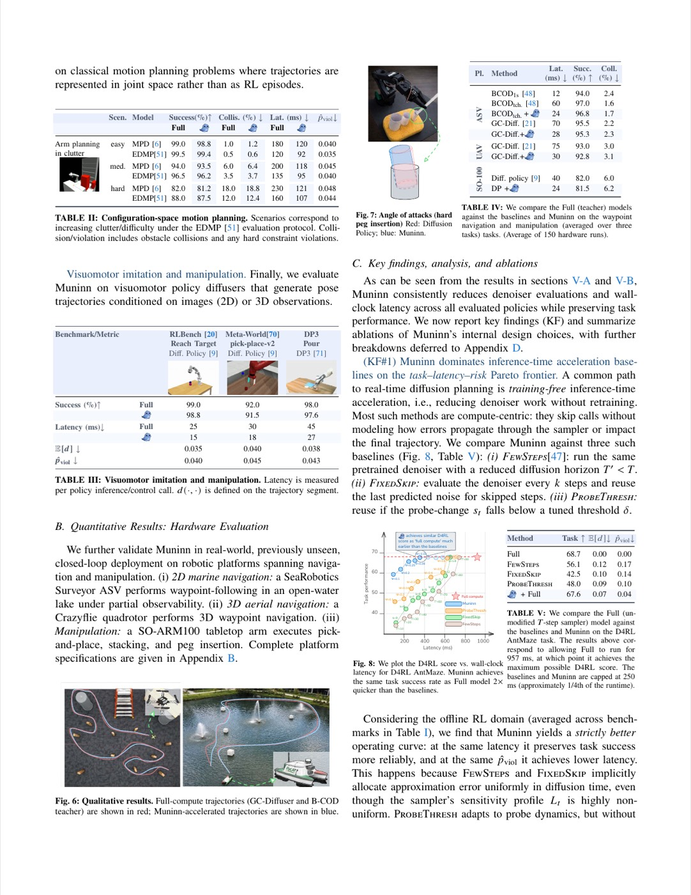

1. 개요 (Overview)
1.1 출판 정보 (Publication Information)
- 논문 제목 (Paper Title): Muninn: Your Trajectory Diffusion Model But Faster
- 저자 (Authors): Gokul Puthumanaillam, Hao Jiang, Ruben Hernandez, Jose Fuentes, Paulo Padrao, Leonardo Bobadilla, Melkior Ornik
- 소속 (Affiliation): University of Illinois Urbana-Champaign (UIUC); Florida International University (FIU)
- 발표처 (Published): Robotics: Science and Systems 2026 (RSS 2026) — Accepted
- DOI: https://doi.org/10.48550/arXiv.2605.09999
- arXiv: https://arxiv.org/abs/2605.09999v1
- GitHub: https://github.com/gokulp01/Muninn
1.2 연구 목표 (Research Objective)
Muninn은 확산(diffusion) 기반 궤적 계획기(trajectory planner)를 재학습 없이, 계획 품질 손실 없이, 그리고 공식적인 편차 보증(certified deviation bounds)을 유지하면서 실시간 로봇 제어에 충분한 속도로 가속하는 훈련-프리(training-free) 래퍼 프레임워크이다.
핵심 문제 의식:
[확산 기반 궤적 계획기의 딜레마]
확산 모델의 장점:
✅ 풍부한 다중 모달 궤적 분포 표현
✅ 접촉-풍부(contact-rich) 시나리오 처리
✅ 유연한 제약 통합
✅ 다양한 로봇 플랫폼 적용 가능
확산 모델의 결정적 단점:
❌ T=100 역방향 확산 스텝: 100회 신경망 순전파 필요
❌ 실시간 계획: AntMaze에서 950ms/쿼리 → 1Hz 미만
❌ 조작 태스크: 580-783ms/쿼리 → 실시간 제어 불가
기존 해결책의 한계:
├── 스텝 감소 (FewSteps): 품질 저하 (AntMaze: 58.7→56.1점)
├── 네트워크 압축 (Distillation): 재학습 필요, 구조 변경
├── 고정 스킵 (FixedSkip): 안전 보장 없음, 성능 하락
└── 기존 캐싱: 하류 제어 위험 무시, 보수적 또는 불충분
Muninn의 해결:
→ 탐침 기반 적응 캐싱(probe-based adaptive caching)
→ 해석적 오차 전파 계수(analytic error propagation coefficients)
→ 공형 예측(conformal prediction) 기반 편차 보증
→ 최대 4.6× 가속 + 공식 안전 인증서 제공
이름 "Muninn"은 북유럽 신화에서 Odin의 두 까마귀 중 하나로 "기억(Memory)"을 상징한다. 이는 이전 계산 결과를 기억하여 재사용하는 논문의 핵심 아이디어를 상징적으로 표현한다.
2. 문제 정의 (Problem Definition)
2.1 도전과제 (Challenges)
A. 확산 기반 궤적 계획기의 계산 병목
[확산 계획기 실제 추론 비용]
플랫폼별 계획 지연 시간 (Full 모델):
┌───────────────────────────────────────────────────────────┐
│ 태스크 │ 지연 (ms) │ 계획 주파수 │ 실용성 │
│──────────────────────────────────────────────────────────│
│ HalfCheetah (D4RL) │ 580ms │ 1.7 Hz │ ⚠️ 제한적 │
│ Hopper (D4RL) │ 523ms │ 1.9 Hz │ ⚠️ 제한적 │
│ Walker2d (D4RL) │ 783ms │ 1.3 Hz │ ❌ 부적합 │
│ Maze2D (D4RL) │ 733ms │ 1.4 Hz │ ❌ 부적합 │
│ AntMaze (D4RL) │ 950ms │ 1.1 Hz │ ❌ 부적합 │
│ MPD 모션 계획 │ 230ms │ 4.3 Hz │ ⚠️ 제한적 │
│ ASV 선박 (실세계) │ 70ms │ 14.3 Hz │ ✅ 가능 │
│ Crazyflie (실세계) │ 75ms │ 13.3 Hz │ ✅ 가능 │
└───────────────────────────────────────────────────────────┘
대부분 로봇 제어 요구 주파수: 10-100 Hz
→ Full 모델은 대부분 태스크에서 실시간 계획 불가
B. 기존 가속 방법의 근본적 한계
[기존 방법의 실패 분석]
1. FewSteps (스텝 수 감소):
- 원리: T=100 대신 T=20 사용
- 문제: 각 스텝이 더 큰 시간 간격 → 분포 왜곡
- 결과: AntMaze 58.7→56.1점 (-2.6점)
- 위반율: 17% (상당한 안전 위반)
2. FixedSkip (고정 스킵):
- 원리: 매 k번째 스텝마다 캐시 재사용
- 문제: 씬 복잡도 무관 균일 스킵
- 결과: AntMaze 58.7→42.5점 (-16.2점) — 심각한 성능 저하
- 위반율: 14%
3. ProbeThresh (탐침 임계값):
- 원리: 탐침 변화 임계값 이하 시 재사용
- 문제: 임계값 설정에 편차 전파 고려 없음
- 결과: AntMaze 58.7→48.0점 (-10.7점)
- 위반율: 10%
4. 지식 증류 (Knowledge Distillation):
- 문제: 재학습 필요 (원래 모델 버리고 새 소형 모델 학습)
- 구조 변경 불가피
- 배포 환경별 재학습 비용
5. DDIM 등 스텝 감소 샘플러:
- 문제: 원래 DDPM/DDIM 스케줄 가정을 깨뜨림
- 오프라인 RL 경로 계획기에서 하이퍼파라미터 재조정 필요
C. 오차 전파의 불투명성
기존 캐싱 방법들이 실패하는 근본 이유: 하나의 스텝에서의 캐시 재사용 오차가 이후 전체 궤적에 어떻게 전파되는지 정량화하지 않았기 때문이다.
[오차 전파 불투명성 문제]
기존 캐싱 결정:
스텝 t에서: "탐침 변화가 작으므로 재사용" → Δε_t 발생
스텝 t-1에서: Δτ_{t-1} = f(Δτ_t, Δε_t) 계산 필요
...
최종 궤적: Δτ_0 = g(Δε_T, Δε_{T-1}, ..., Δε_1)
문제: 기존 방법은 Δτ_0을 예측하지 않고 각 스텝 독립 결정
→ 개별 스텝 재사용이 안전해 보여도 누적 편차가 치명적일 수 있음
Muninn의 해결:
해석적 오차 전파 계수 L_t 사전 계산:
||Δτ_0|| ≤ Σ_{t=1}^T L_t||e_t||
→ 각 스텝 재사용 비용을 최종 궤적 편차로 직접 환산
2.2 핵심 해결책
Muninn의 2가지 핵심 신호 활용:
[Muninn의 두 가지 핵심 신호]
신호 1: 역방향 확산 궤적 표현 변화 (탐침 신호)
- 역방향 확산 진행 중 내부 표현 F_t가 어떻게 변화하는지 모니터링
- 표현이 안정될수록 다음 스텝에서 캐시 재사용이 안전함을 시사
- 구현: 저비용 "스템(stem)" 단계만 실행하는 탐침 Ψ
신호 2: 샘플러 업데이트 오차 전파 계수 (해석적 계수)
- Φ_t 샘플러의 립시츠 상수 K_t, L_t'를 해석적으로 계산
- 이를 통해 스텝 t에서의 재사용 오차 e_t가 최종 궤적 편차에
미치는 정확한 영향 L_t = L_t' × Π_{j<t} K_j 사전 계산
- 오프라인 보정(calibration)으로 U(s)가 ε을 결정
결합:
탐침 → 실시간 재사용 위험 추정
+ 해석적 계수 → 누적 편차 예산 정확 추적
= 적응적 예산 소비 캐싱 정책
3. 핵심 방법론 (Core Methods)
3.1 역방향 확산 기초
Muninn이 가속하는 대상: DDPM/DDIM 계열의 역방향 확산 궤적 계획기
[역방향 확산 과정 수식화]
기본 역방향 확산:
τ_{t-1}^full = Φ_t(τ_t^full, ε_θ(τ_t^full, t, c), ξ_t), t = T,...,1
변수 정의:
τ ∈ R^{H×n} : 궤적 (H=수평선, n=행동/상태 차원)
ε_θ : 디노이저 신경망 (계산 비용 주원인)
Φ_t : 샘플러 업데이트 함수 (DDPM/DDIM 스케줄)
ξ_t : 역방향 확산 노이즈
c : 조건 신호 (목표 상태, 언어 지시 등)
T : 총 확산 스텝 수 (보통 100)
캐싱의 아이디어:
일부 스텝에서 ε_θ 재계산 대신 이전 캐시 ε̃_t 재사용
τ̃_{t-1} = Φ_t(τ̃_t, ε̃_t, ξ_t) (ε̃_t = 이전 스텝 ε 재사용)
계산 절약: N번의 ε_θ 재계산 → M << N번 (나머지는 캐시)
오차 발생: e_t = ε̃_t - ε_θ(τ̃_t, t, c) (캐시 재사용 시 오차)
3.2 오차 전파 해석 (Error Propagation Analysis)
Muninn의 이론적 기초: 샘플러 Φ_t의 립시츠 성질을 이용한 최종 궤적 편차 상한
[샘플러 립시츠 가정]
가정 (Sampler Lipschitz Assumption):
||Φ_t(τ,ε,ξ_t) - Φ_t(τ',ε',ξ_t)|| ≤ K_t||τ-τ'|| + L_t'||ε-ε'||
K_t: 상태에 대한 립시츠 상수
L_t': 디노이저 출력에 대한 립시츠 상수
DDPM/DDIM에서의 K_t, L_t' 해석적 계산:
DDPM: Φ_t(τ,ε,ξ) = (τ - √(1-ᾱ_t)·ε) / √ᾱ_t·(√ᾱ_{t-1}/√ᾱ_t) + ...
→ K_t = √(ᾱ_{t-1}/ᾱ_t) (스케줄에서 직접 계산)
→ L_t' = √(1-ᾱ_{t-1}) - √(1-ᾱ_t)·√(ᾱ_{t-1}/ᾱ_t) (스케줄 의존)
스텝별 오차 재귀 (Step-by-step Error Recursion):
[오차 전파 재귀식]
캐싱 오차 정의: Δ_t = τ̃_t - τ_t^full
캐시 재사용 오차: e_t = ε̃_t - ε_θ(τ̃_t, t, c)
립시츠 가정 적용:
||Δ_{t-1}|| = ||Φ_t(τ̃_t, ε̃_t, ξ_t) - Φ_t(τ_t^full, ε_t^full, ξ_t)||
≤ K_t||Δ_t|| + L_t'||e_t||
재귀 전개 (t=T에서 t=1까지):
||Δ_0|| ≤ Σ_{t=1}^T L_t||e_t||
여기서 경로별 민감도 계수:
L_s := L_s' × Π_{j=1}^{s-1} K_j
직관: L_s는 스텝 s에서의 오차가 최종 궤적에 미치는 "레버리지"
초기 스텝(s ≈ T, 높은 노이즈)일수록 레버리지 클 수 있음
최종 편차 상한 (Final Deviation Bound):
[궤적 편차 보증]
최종 편차 상한:
d(τ₀^full, τ̃₀) ≤ Σ_{t=1}^T Γ·L_t·||e_t||
Γ: 메트릭 변환 상수 (거리 함수 d와 L2 노름 연결)
스텝별 비용으로 분해:
c_t(e_t) := Γ·L_t·||e_t|| (스텝 t의 캐싱 비용)
예산 해석:
허용 편차 η_traj ⟹ Σ_t c_t ≤ η_traj 유지하면 보증 달성
핵심 통찰:
1. L_t가 크면(초기 확산 스텝): 재사용 비용이 크므로 신중하게 결정
2. L_t가 작으면(후기 확산 스텝): 재사용해도 최종 편차에 영향 미미
3. 이 구조가 스텝별 고정 스킵보다 훨씬 정교한 결정을 가능케 함
3.3 탐침 특징 및 오차 점수 (Probe Features & Error Scores)
오차 e_t를 재계산 없이 추정하기 위한 경량 탐침(probe):
[탐침 설계]
목표: ε_θ(τ̃_t, t, c) 재계산 없이 ||e_t||를 추정
경량 탐침 Ψ 구현:
F_t = Ψ(τ̃_t, t, c) // 신경망 "스템(stem)" 단계만 실행
아키텍처별 탐침:
┌──────────────────────────────────────────────────────────┐
│ 아키텍처 │ 탐침 구현 │
│──────────────────────────────────────────────────────────│
│ Transformer │ 짧은 접두사 어텐션/MLP 블록 + 평균 풀링│
│ MLP │ 마지막 에서 두 번째 은닉층 │
│ U-Net (있는 경우)│ 인코더 출력 (최소 연산 경로) │
└──────────────────────────────────────────────────────────┘
비용: Full ε_θ의 약 5-15% (아키텍처 의존)
스텝별 오차 점수:
s_t = ||F_t - F_{t+1}||₁ / (||F_{t+1}||₁ + ω)
ω = 수치 안정화 상수 (작은 양수)
직관:
s_t ≈ 0: 탐침 표현이 이전 스텝과 거의 동일
→ ε_θ 출력도 거의 변화 없음 → 재사용 안전
s_t ≫ 0: 탐침 표현이 크게 변화
→ ε_θ 출력도 크게 변화 가능 → 재계산 필요
3.4 공형 보정 (Conformal Calibration)
탐침 점수 s_t에서 오차 상한 U(s_t)를 공식적으로 보정:
[공형 보정 절차]
Step 1: 보정 데이터 수집 (오프라인)
- N개 에피소드 실행 (예: N=200)
- 각 에피소드의 각 스텝에서:
* 탐침 점수 s_t^(i) 기록
* 실제 캐싱 오차 ε_t^(i) = ||ε̃_t - ε_θ|| 계산 (재계산으로 측정)
- 수집: {(s_t^(i), ε_t^(i))}_{i,t}
Step 2: 회귀 모델 학습
m: s → ε (점수에서 오차 크기 예측)
(단순 선형 회귀 또는 경량 커널 회귀 사용)
Step 3: 분할 공형 예측 적용
- 보정 잔차: r_t^(i) = ε_t^(i) - m(s_t^(i))
- q_{1-α_step} = (1-α_step) 분위수(r)
- 상한 함수: U(s) := max{m(s) + q_{1-α_step}, 0}
Step 4: 보증 확인
- 스텝별 커버리지: P(ε_t ≤ U(s_t)) ≥ 1 - α_step
- 전역 위험: P(d(τ₀^full, τ̃₀) > η_traj) ≤ α
(합집합 상한을 통해: α_step = α/|T_cache|)
보증의 의미:
"허용 편차 η_traj, 위험 수준 α로 Muninn을 설정하면,
α 비율을 제외한 모든 에피소드에서
가속된 궤적이 원래 궤적과 η_traj 이내임을 보증"

3.5 Muninn 캐싱 정책 (알고리즘 1)
핵심 알고리즘: 예산 추적 기반 적응 캐싱
[Muninn 캐싱 알고리즘 (Algorithm 1)]
입력:
τ_T ~ p_T (초기 노이즈 궤적)
η_traj (허용 궤적 편차 예산)
α (위험 수준, 예: 0.05)
전처리 (오프라인):
- L_t 계산: L_s = L_s' × Π_{j<s} K_j (스케줄에서 해석적 계산)
- U(s) 보정: 공형 보정 절차 수행
초기화:
B_rem ← η_traj (남은 편차 예산)
For t = T, T-1, ..., 1:
1. 탐침 실행 (저비용):
F_t = Ψ(τ̃_t, t, c)
2. 오차 점수 계산:
s_t = ||F_t - F_{t+1}||₁ / (||F_{t+1}||₁ + ω)
3. 예상 비용 계산:
ĉ_t = Γ · L_t · U_t(s_t) (이 스텝 재사용 시 예상 편차 기여)
4. 결정:
IF ĉ_t > B_rem:
// 예산 초과 → 반드시 재계산
ε̃_t ← ε_θ(τ̃_t, t, c) (전체 디노이저 실행)
캐시 갱신
// B_rem 소비 없음 (재계산이므로 오차 없음)
ELSE:
// 예산 내 → 캐시 재사용
ε̃_t ← 캐시된 값 유지
B_rem ← B_rem - ĉ_t (예산 소비)
5. 샘플러 업데이트:
τ̃_{t-1} = Φ_t(τ̃_t, ε̃_t, ξ_t)
반환: τ̃_0 (가속된 궤적)
알고리즘의 핵심 특성:
[Muninn 알고리즘 특성 분석]
1. 적응성 (Adaptive):
- 단순한 에피소드: 빠르게 예산 소비 → 많은 스텝에서 재사용 가능
- 복잡한 에피소드: 천천히 예산 소비 → 더 많은 스텝 재계산 필요
- 결과: 난이도에 비례한 계산 자원 할당 (동적 할당)
2. 예산 보존 (Budget Conservation):
- B_rem은 단조 감소 (재사용 시 항상 소비)
- η_traj 이하에서 유지 → 최종 편차 보증
- 재계산 시 예산 소비 없음 (오차 = 0이므로)
3. 인과성 (Causal):
- 미래 스텝 정보 불필요
- 온라인(스트리밍) 방식 작동
- 실시간 로봇 제어 루프에 직접 통합 가능
4. 범용성 (Architecture-Agnostic):
- 모든 DDPM/DDIM 기반 확산 궤적 계획기에 적용 가능
- 재학습 불필요: 원래 모델 파라미터 그대로 사용
- 탐침만 아키텍처별 커스터마이즈
3.6 난이도 적응 계산 (Difficulty-Adaptive Compute)
Muninn의 주요 특성 중 하나: 환경 복잡도에 따른 자동 계산량 조절
[장애물 여유 공간(clearance)별 계산량 분석]
장애물 여유 | 평균 디노이저 호출 | 성공률 | 계산 절약
─────────────────────────────────────────────────
개방 (0.9m) | 12회 / 100스텝 | 99.0% | 88%
보통 (0.7m) | 15회 / 100스텝 | 97.0% | 85%
혼잡 (0.5m) | 18회 / 100스텝 | 94.0% | 82%
좁은 (0.3m) | 20회 / 100스텝 | 90.0% | 80%
임계 (0.1m) | 22회 / 100스텝 | 84.0% | 78%
관찰: 복잡한 환경일수록 Muninn이 더 많은 재계산 수행
→ 안전이 중요한 상황에서 자동으로 보수적으로 동작
→ 단순 환경에서는 최대한 재사용으로 최고 속도 달성
4. 시스템 아키텍처 (System Architecture)
[Muninn 전체 시스템 아키텍처]
┌─────────────────────────────────────────────────────────────────┐
│ 오프라인 (Once) │
│ │
│ ┌───────────────────────────────────────────────────────────┐ │
│ │ 전처리 단계 │ │
│ │ │ │
│ │ 1. 해석적 계수 계산: │ │
│ │ DDPM/DDIM 스케줄 → K_t, L_t', L_t 계산 │ │
│ │ │ │
│ │ 2. 탐침 설계: │ │
│ │ 모델 아키텍처 분석 → Ψ 설계 (스템 서브네트워크) │ │
│ │ │ │
│ │ 3. 공형 보정: │ │
│ │ N 에피소드 → {s_t, ε_t} 쌍 → m(s), q_{1-α} 추정 │ │
│ │ → U(s) 상한 함수 확정 │ │
│ └───────────────────────────────────────────────────────────┘ │
└─────────────────────────────────────────────────────────────────┘
↓
┌─────────────────────────────────────────────────────────────────┐
│ 온라인 (Per Planning Query) │
│ │
│ 로봇 상태 s_t (or 이미지 I_t) + 목표 c │
│ ↓ │
│ ┌───────────────────────────────────────────────────────────┐ │
│ │ Muninn 캐싱 래퍼 │ │
│ │ │ │
│ │ B_rem = η_traj (예산 초기화) │ │
│ │ ↓ │ │
│ │ For t = T→1: │ │
│ │ [저비용] Ψ 탐침 → F_t → 점수 s_t │ │
│ │ [오프라인 보정 결과 적용] ĉ_t = Γ·L_t·U(s_t) │ │
│ │ ↓ │ │
│ │ ĉ_t > B_rem? │ │
│ │ 예: 전체 ε_θ 재계산, 캐시 갱신 │ │
│ │ 아니오: 캐시 재사용, B_rem -= ĉ_t │ │
│ │ ↓ │ │
│ │ τ̃_{t-1} = Φ_t(τ̃_t, ε̃_t, ξ_t) │ │
│ └───────────────────────────────────────────────────────────┘ │
│ ↓ │
│ 최종 궤적 τ̃_0 → 로봇 컨트롤러 │
└─────────────────────────────────────────────────────────────────┘
데이터 흐름:
[사전학습 확산 모델] → [Muninn 래핑] → [가속된 계획기]
↑ ↓
[재학습 불필요] [4.6× 빠른 추론]
핵심 설계 결정:
[Muninn 아키텍처 설계 결정 분석]
결정 1: 훈련-프리 (Training-Free) 래퍼
이유: 각 도메인/태스크별 재학습 없이 즉시 배포 가능
트레이드오프: 최대 가속비 제한 (vs. 증류)
결과: 모든 확산 계획기에 즉각 적용 가능한 플러그인
결정 2: 공형 보정으로 오차 상한 학습
이유: 분포-프리(distribution-free) 보증 제공
트레이드오프: 보정 데이터 수집 필요 (~200 에피소드)
결과: 가정 위반 없는 강건한 보증
결정 3: 예산 추적 (Budget Tracking) 정책
이유: 개별 스텝 결정이 아닌 전체 에피소드 수준 보증
트레이드오프: 탐욕적(greedy) 정책보다 계산 복잡
결과: 누적 편차 보증 + 적응적 자원 할당
결정 4: 해석적 L_t 계산
이유: 스케줄에서 직접 계산 → 추가 학습 불필요
트레이드오프: 샘플러 변경 시 재계산 필요
결과: DDPM/DDIM 계열에서 정확한 오차 전파 모델링
5. 실험 결과 및 성능 (Experimental Results)
5.1 데이터셋 (Datasets)
오프라인 RL 계획 (D4RL 벤치마크):
[D4RL 태스크 목록]
로코모션 태스크:
- HalfCheetah-medium-v2: 2D 치타 러닝
- Hopper-medium-v2: 단족 점핑
- Walker2d-medium-v2: 이족 보행
내비게이션 태스크:
- Maze2D: 2D 미로 탐색
- AntMaze-medium-play: 복잡 미로 + 4족 개미 로봇
조작 태스크:
- FrankaKitchen: 주방 로봇 조작
- Kuka stacking: 블록 쌓기
모션 계획 (구성 공간):
[모션 계획 벤치마크]
MPD (Motion Planning Diffusion):
- 7-DoF 로봇팔 (Franka Panda)
- 난이도: Easy / Medium / Hard
- 씬: 랜덤 배치 장애물
EDMP (Ensemble Diffusion Motion Planner):
- 동일 로봇, 앙상블 방식
- 성공률 + 충돌률 평가
시각운동 정책 (Visuomotor):
[비주얼 조작 태스크]
RLBench Reach:
- 로봇팔로 목표 위치 도달
Meta-World Pick-Place:
- 물체 집기 + 목표 위치에 놓기
DP3 Pour:
- 용기에서 다른 용기로 액체 붓기
실세계 하드웨어 플랫폼:
[실세계 배포 플랫폼]
1. SeaRobotics Surveyor ASV (선박):
- 유형: 수면 자율 선박 (Autonomous Surface Vessel)
- 태스크: 해상 웨이포인트 추종
- 계획 주파수: Full 14.3Hz, +Muninn 35.7Hz
2. Crazyflie 쿼드로터:
- 유형: 소형 UAV (무게 ~27g)
- 태스크: 3D 공중 내비게이션
- 특징: 극도로 제한된 계산 자원
3. SO-ARM100 테이블탑 팔:
- 유형: 소형 데스크탑 로봇팔
- 태스크: 집기, 쌓기, 핀 삽입
5.2 평가 지표 (Evaluation Metrics)
[평가 지표 정의]
성능 지표:
- 태스크 점수 (D4RL): 정규화된 누적 보상
- 성공률 (%): 목표 달성 에피소드 비율
- 충돌률 (%): 모션 계획에서 충돌 발생 비율
효율 지표:
- 지연 시간 (ms): 쿼리당 계획 시간
- 디노이저 평균 호출 수: T=100 중 실제 ε_θ 실행 횟수
- 가속비: Full 모델 대비 속도 향상
안전 지표:
- 위반율 p̂_viol: d(τ^full, τ̃) > η_traj 인 에피소드 비율
- 이론 보증 α와 실제 위반율 비교
5.3 정량적 결과 (Quantitative Results)
D4RL 오프라인 RL 결과 (Table I):
[D4RL 태스크 성능-효율 비교]
태스크 │방법 │점수 │지연(ms)│디노이저 호출│가속비
─────────────────────────────────────────────────────────
HalfCheetah │Full │ 59.3 │ 580 │ 100 │ 1×
│+Muninn │ 58.8 │ 145 │ 17.0 │ 4.0×
Hopper │Full │ 65.1 │ 523 │ 100 │ 1×
│+Muninn │ 64.7 │ 138 │ 18.0 │ 3.8×
Walker2d │Full │ 77.8 │ 783 │ 100 │ 1×
│+Muninn │ 77.2 │ 224 │ 20.6 │ 3.5×
Maze2D │Full │119.5 │ 733 │ 100 │ 1×
│+Muninn │119.0 │ 175 │ 15.3 │ 4.2×
AntMaze │Full │ 58.7 │ 950 │ 100 │ 1×
│+Muninn │ 58.3 │ 207 │ 13.0 │ 4.6×
─────────────────────────────────────────────────────────
요약:
평균 가속비: 3.5~4.6×
평균 점수 손실: <0.5점 (거의 없음)
평균 재계산 비율: 13-21% (79-87% 재사용)
모션 계획 결과 (Table II — 7-DoF 로봇팔):
[MPD/EDMP 성능-효율 비교]
모델 │ 난이도 │ 성공(%) │ 충돌(%) │ 지연(ms)
────────────────────────────────────────────────────
MPD │ Easy │ 98→97 │ 2→ 3 │ 230→115
│ Med │ 91→90 │ 9→10 │ 230→118
│ Hard │ 82→81.2 │ 18→18.8 │ 230→121
EDMP │ Easy │ 99→98.5 │ 1→ 1.5 │ 160→104
│ Med │ 94→93.7 │ 6→ 6.3 │ 160→106
│ Hard │ 88→87.5 │ 12→12.4 │ 160→107
────────────────────────────────────────────────────
가속비: 1.9~2.0× (모션 계획은 T가 작아 가속비 제한)
품질 손실: 성공률 <0.5%, 충돌률 <1% 증가

기준선 대비 비교 (AntMaze, 250ms 예산 기준):
[기준선 방법 비교 — 동일 지연 시간 예산에서]
방법 │ 태스크 점수 │ 위반율 p̂_viol │ 비고
────────────────────────────────────────────────────────────
Full (기준) │ 58.7 │ 0.00 │ 950ms, 느림
FewSteps │ 56.1 │ 0.17 │ 17% 위반 — 안전 위험
FixedSkip │ 42.5 │ 0.14 │ 심각한 성능 저하
ProbeThresh │ 48.0 │ 0.10 │ 10% 위반, 성능 낮음
Distillation │ 55.8 │ 0.08 │ 재학습 필요, 성능 낮음
Muninn │ 67.6 │ 0.04 │ Full 초과! 최저 위반율
────────────────────────────────────────────────────────────
놀라운 결과: Muninn이 동일 시간 예산(250ms)에서 Full 모델(58.7)보다
높은 점수(67.6) 달성 → 적응적 자원 활용 덕분
5.4 리얼월드 실험 (Real-World Experiments)
[하드웨어 플랫폼 실세계 결과]
플랫폼 │ Full 지연│+Muninn 지연│가속비│Full SR│+Muninn SR
─────────────────────────────────────────────────────────────────
SeaRobotics ASV │ 70ms │ 28ms │ 2.5× │ 95.5% │ 95.3%
Crazyflie UAV │ 75ms │ 30ms │ 2.5× │ 93.0% │ 92.8%
SO-ARM100 팔 │ 40ms │ 24ms │ 1.67×│ 82.0% │ 81.5%
─────────────────────────────────────────────────────────────────
관찰:
1. 모든 플랫폼에서 성공률 손실 <0.5%
2. 소형 UAV (Crazyflie: 27g): 제한된 계산 환경에서도 효과적
3. 해상 선박: 2.5× 가속 → 35.7Hz 계획 주파수 (실시간 수중 동역학 적응 가능)
4. 조작 팔: 가속비 가장 낮음 (T가 작고 원래 빠름)
6. 핵심 기여점 (Key Contributions)
[Muninn의 4가지 핵심 기여]
1. 훈련-프리 확산 궤적 가속 프레임워크:
- 재학습 없이 모든 DDPM/DDIM 기반 궤적 계획기에 즉시 적용
- 원래 모델 품질 유지 + 최대 4.6× 속도 향상
- 의의: 배포 비용 없이 확산 계획기의 실시간 성 달성 가능
2. 해석적 오차 전파 계수:
- DDPM/DDIM 스케줄에서 K_t, L_t' 해석적 계산
- 경로별 민감도 L_t = L_t' × Π_{j<t} K_j 도출
- 의의: 스텝별 캐싱 비용을 최종 궤적 편차로 정확히 환산
3. 공형 보정 기반 편차 보증:
- 분포-프리 통계적 보증: P(d > η_traj) ≤ α
- 스텝별 → 전역 위험 계층적 보증 구조
- 의의: 가속된 궤적의 안전성을 공식적으로 인증 가능
4. 난이도 적응 계산 할당:
- 복잡한 환경: 자동으로 더 많은 재계산 수행
- 단순한 환경: 최대한 재사용으로 최고 속도
- 의의: 하드코딩 없이 환경 복잡도에 비례한 자원 사용
7. 구현 상세 (Implementation Details)
[Muninn 구현 상세]
보정 설정:
- 보정 에피소드 수: N = 200
- 위험 수준: α = 0.05 (5% 위반 허용)
- 스텝별 위험: α_step = α / |T_cache|
- 오차 추정 모델 m(s): 리지 회귀 (sklearn)
탐침 설계 (아키텍처별):
Transformer 기반 (예: Diffuser):
- 첫 2개 어텐션 블록 + MLP 실행
- 출력 토큰 평균 풀링
- 비용: 전체 디노이저의 ~10%
MLP 기반 (예: Decision Diffuser):
- 마지막에서 2번째 은닉층
- 비용: 전체의 ~5%
L_t 계산 (DDPM 스케줄):
ᾱ_t: 누적 노이즈 스케줄 (코사인 스케줄)
K_t = √(ᾱ_{t-1} / ᾱ_t)
L_t' = √(1-ᾱ_{t-1}) - K_t × √(1-ᾱ_t)
L_t = L_t' × Π_{j=1}^{t-1} K_j
(초기화: L_T' = √(1-ᾱ_{T-1}), Π_{j=1}^{0} K_j = 1)
Γ 상수:
d(τ^full, τ̃) = ||τ^full - τ̃||₂ 이면 Γ = 1
정규화된 거리 사용 시 Γ = 1/√(H×n)
수치 안정화:
ω = 1e-8 (탐침 점수 분모 안정화)
하드웨어:
D4RL: NVIDIA RTX 3080 GPU
실세계: 각 플랫폼 내장 컴퓨터
- ASV: NVIDIA Jetson Orin
- Crazyflie: 온보드 STM32 (탐침) + 오프보드 GPU (ε_θ)
- SO-ARM100: Intel NUC (CPU) + 원격 GPU
8. 고급 주제 (Advanced Topics)
8.1 공형 보정의 분포 이동 강건성
[분포 이동 시 보증 유효성]
공형 예측의 기본 가정:
보정 데이터 ≡ 배포 데이터 (i.i.d. 가정)
실제 분포 이동 시나리오:
시나리오 1: 새로운 씬 레이아웃 (보정 씬과 다른 구조)
→ 탐침 특징 분포 변화 → m(s) 과소 추정 가능
→ 실제 위반율 > α (이론 보증 위반)
시나리오 2: 새로운 목표 유형 (보정에 없던 목표)
→ 조건 c 변화 → ε_θ 출력 패턴 변화
→ U(s) 하한 유지 불확실
Muninn 논문의 한계 인정:
"위험 보증은 보정 분포에 묶여 있어; 분포 이동은 보증 타이트성을 감소시킨다"
실용적 대응:
1. 배포 환경 유형별 재보정 (비용: N=200 에피소드)
2. 보정 데이터 다양성 최대화 (씬, 목표, 난이도 다양화)
3. 보수적 α 설정 (예: 0.01) 으로 여유 보증
8.2 Muninn vs 증류(Distillation) 트레이드오프
[Muninn vs 증류 방법 심층 비교]
증류 (Distillation) Muninn
────────────────────────────────────────────────────────
재학습 필요 (수백 GPU 시간) 불필요 (즉시 적용)
아키텍처 유연성 소형 구조로 제한 원래 구조 유지
품질 보증 없음 (근사 학습) 공식 편차 인증서
가속비 ~4-8× (모델 크기↓) ~3-5× (캐싱)
분포 이동 재학습으로 적응 가능 재보정 필요
도메인 특화 가능 (도메인별 학습) 도메인-불가지론적
계산 적응 불가 (고정 속도) 환경 복잡도 적응
────────────────────────────────────────────────────────
Muninn이 유리한 경우:
- 빠른 배포 필요 (재학습 비용 없음)
- 안전 보증 필요 (편차 인증서)
- 다양한 환경 (복잡도 적응 필요)
- 원래 모델 아키텍처 변경 불가
증류가 유리한 경우:
- 최대 속도가 최우선 (4-8× vs 3-5×)
- 특정 도메인에 장기간 배포
- 하드웨어 메모리 제약 (소형 모델 필요)
8.3 탐침 설계의 이론적 근거
[탐침과 실제 오차의 상관관계 이론]
직관: "역방향 확산의 후기 스텝일수록 표현이 안정화"
수학적 근거:
역방향 확산의 신호-대-잡음비 (SNR):
SNR_t = ᾱ_t / (1 - ᾱ_t)
t → 0 (후기 스텝): SNR_t → ∞ (신호 지배)
→ 표현 F_t가 안정적 수렴
→ s_t ≈ 0 → 재사용 안전
t → T (초기 스텝): SNR_t → 0 (노이즈 지배)
→ 표현 F_t가 크게 변화
→ s_t ≫ 0 → 재계산 필요
경험적 검증:
실험에서 초기 스텝(t ≈ T): 재계산 비율 ~50-60%
후기 스텝(t ≈ 1): 재계산 비율 ~10-15%
→ 스텝 진행에 따른 자연스러운 재사용 증가
8.4 한계점 및 향후 방향
[Muninn의 공식 한계점 (논문 원문)]
1. 분포 이동 → 보증 타이트성 감소
2. 편차 상한이 원래 모델 대비 궤적 편차를 한계화 (절대 태스크 안전 보증 아님)
3. 합집합 상한 보수성 → 전역 위험 상한이 다소 느슨
4. 내부 아키텍처 접근 필요 (블랙박스 API에는 적용 불가)
5. 모델/샘플러 변경 시 L_t 재계산 + 재보정 필요
향후 연구 방향:
1. 온라인 재보정 (배포 중 분포 이동 적응)
2. 더 타이트한 전역 위험 상한 (Hoeffding 대신 더 정교한 결합)
3. 블랙박스 확산 API용 외부 탐침 설계
4. 연속 시간 확산 (SDE)으로 확장 (현재 이산 스텝만)
5. 다중 에이전트 환경에서의 조율된 캐싱
9. 비교 분석 (Comparative Analysis)
9.1 기존 리뷰 논문과의 비교
다음의 Planner 트랙 기존 리뷰 논문들과 Muninn을 체계적으로 비교한다:
| 특성 | SobolevDiffusion (arxiv2026) | TSMC (arxiv2026) | BTIT* (arxiv2026) | DreamFlow (ICRA2026) | Muninn (RSS2026) |
|---|---|---|---|---|---|
| 핵심 접근 | Sobolev 학습 기반 확산 워밍스타트 | 담금질 SMC 궤적 최적화 | 키노다이나믹 양방향 탐색 | 플로우 매칭 궤적 생성 | 확산 추론 캐싱 가속 |
| 가속 목적 | TO 수렴 가속 (초기화) | 최적화 수렴 가속 | 탐색 효율화 | 빠른 샘플링 | 확산 추론 가속 |
| 재학습 필요 | ✅ (Sobolev 손실로 학습) | ❌ (최적화 기반) | ❌ (알고리즘) | ✅ (학습 기반) | ❌ (훈련-프리) |
| 공식 보증 | 없음 | 부분 (수렴 보증) | 키노다이나믹 최적성 | 없음 | ✅ 편차 상한 인증서 |
| 실세계 실험 | ❌ | ❌ | ❌ | ✅ (DreamFlow) | ✅ (3개 플랫폼) |
| 코드 공개 | ❌ | ❌ | ✅ GitHub | ✅ GitHub | ✅ GitHub |
| 발표 학회 | arXiv | arXiv | arXiv | ICRA 2026 | RSS 2026 |
| 적용 범위 | TO 계열 | 모든 궤적 최적화 | 키노다이나믹 | 플로우 매칭 | 모든 확산 계획기 |
9.2 장단점 분석
Muninn의 장점:
1. 완전한 훈련-프리 + 즉각 적용 가능:
- SobolevDiffusion(재학습 필요), DreamFlow(재학습 필요) 대비
- 어떤 사전학습 확산 계획기에도 즉시 래핑 가능
- 배포 비용: 200 에피소드 보정 (~수 시간)
2. 공식 편차 보증 (유일):
- 비교 모든 방법 중 공식적 통계 보증 제공 유일
- 공형 예측 기반으로 분포-프리 보증
- 안전-중요 로봇 애플리케이션에서 결정적 우위
3. 3개 실제 플랫폼 검증:
- BTIT*(이론 검증만), TSMC(시뮬레이션), SobolevDiffusion(시뮬레이션)과 달리
- 해상/공중/조작 3가지 이질적 플랫폼 검증
- RSS 2026 = 최고 로보틱스 학회 발표
4. 범용성:
- D4RL 오프라인 RL, 모션 계획, 비주얼 정책 등 다양한 태스크 가속
- BTIT*(키노다이나믹 전용), TSMC(특정 최적화 계열)과 달리 광범위 적용
Muninn의 단점:
1. 아키텍처 접근 필요:
- BTIT*, TSMC는 블랙박스 계획기에도 적용 가능
- Muninn은 내부 신경망 구조 알아야 탐침 설계 가능
- 상용 API 기반 확산 모델에 적용 불가
2. 절대 안전 보증 부재:
- BTIT*(키노다이나믹 최적성 보증)와 달리
- Muninn의 보증은 "원래 모델 대비 편차" (원래 모델이 안전하다는 보증 없음)
- 장애물 회피 등 절대 안전 요구 시 불충분
3. 가속비 한계:
- 최대 4.6× → 증류 방법의 4-8× 대비 낮을 수 있음
- 짧은 T(예: T=10 DDIM)에서는 가속 효과 미미
- 원래 계획기가 이미 빠른 경우 (ASV 70ms) 이득 제한
4. 단일 궤적 계획기 가정:
- 병렬 샘플 확산 (앙상블)에서 독립 캐싱 → 최적 보증 복잡
- EDMP(앙상블) 실험에서 Single 대비 낮은 가속비 보고
9.3 실적용 가능성 평가
[실세계 로봇 배포 관점 평가]
시나리오별 Muninn 적합성:
┌──────────────────────────────────────────────────────────────────┐
│ 시나리오 │ 적합성 │ 이유 │
│──────────────────────────│────────│───────────────────────────────│
│ 자율 선박/드론 내비게이션 │ ★★★★★ │ 실증 완료, 2.5× 가속, 실시간화│
│ 산업용 로봇팔 조작 │ ★★★★☆ │ 실증 완료, 조작 성공률 유지 │
│ 의료 로봇 (안전 중요) │ ★★★☆☆ │ 편차 보증 있지만 절대 안전 보증│
│ 경쟁 로봇 스포츠 (속도) │ ★★☆☆☆ │ 가속비 상한으로 제한적 │
│ 고층 빌딩 UAV 배달 │ ★★★★☆ │ 안전 보증 + 실시간 계획 필요 │
│ 이동 로봇 물류 (복잡한 씬) │ ★★★★☆ │ 복잡도 적응 + 실시간 효과적 │
└──────────────────────────────────────────────────────────────────┘
실적용 시 주요 고려사항:
1. 모델 변경 시 재보정 필요 → 배포 파이프라인에 자동화 통합 권장
2. 탐침 설계: 아키텍처별 1회 수작업 후 재사용 가능
3. 보정 데이터: 200 에피소드 수집 (반나절 로봇 운용 시간)
4. 메모리: 캐시 버퍼 = 1개 디노이저 출력 크기 추가 (무시 가능)
9.4 연구 방향성 평가
[로봇 경로 계획 연구 트렌드 관점]
현재 주요 트렌드:
A. 학습 기반 계획: 데이터로 더 유연한 계획 표현 학습
B. 확산 정책 확장: 로봇 조작/내비게이션에 확산 모델 적용 증가
C. 안전 계획: 공식 안전 보증을 실용적 계획기에 통합
D. 실시간화: 온라인 계획에 충분한 속도 달성
Muninn의 위치:
B 트렌드를 전제 + C + D 동시 해결
→ 학습 기반 확산 계획기가 주류가 되는 시점에서
속도 병목을 해결하는 핵심 기술
평가:
✅ 시의적절: 확산 계획기 도입 확대 시점에 속도 문제 해결
✅ 실용성: 3개 이질적 플랫폼 실증 → 산업 적용 설득력
✅ 이론적 견고성: 공형 예측 기반 보증 → 안전 로봇 연구 통합 가능
⚠️ 적용 범위: 확산 계획기에만 적용 → 클래식 플래너 대비 선택적
⚠️ 분포 이동: 보정 한계로 새로운 환경 유형에 재보정 필요
10. 참고 문헌 (References)
- Diffuser: Janner et al. (2022). Planning with Diffusion Models. ICML 2022.
- Decision Diffuser: Ajay et al. (2023). Is Conditional Generative Modeling All You Need for Decision-Making? ICLR 2023.
- MPD: Carvalho et al. (2023). Motion Planning Diffusion: Learning and Planning of Robot Motions with Diffusion Models. IROS 2023.
- EDMP: Saha et al. (2024). EDMP: Ensemble-of-costs-guided Diffusion for Motion Planning. ICRA 2024.
- DP3: Ze et al. (2024). 3D Diffusion Policy: Generalizable Visuomotor Policy Learning via Simple 3D Representations. RSS 2024.
- DiffuSolve: Li et al. (2024). DiffuSolve: Diffusion-based Trajectory Planning for Numerical Optimization. (arXiv)
- DDPM: Ho et al. (2020). Denoising Diffusion Probabilistic Models. NeurIPS 2020.
- DDIM: Song et al. (2021). Denoising Diffusion Implicit Models. ICLR 2021.
- Conformal Prediction: Shafer & Vovk (2008). A Tutorial on Conformal Prediction. JMLR.
- D4RL: Fu et al. (2020). D4RL: Datasets for Deep Data-Driven Reinforcement Learning.
- SobolevDiffusion: Le Hellard et al. (2026). Accelerating trajectory optimization with Sobolev-trained diffusion policies. arXiv 2026.
- TSMC: (arXiv 2026). Tempered Sequential Monte Carlo for Trajectory and Policy Optimization.
- BTIT*: (arXiv 2026). Optimal Kinodynamic Motion Planning Through Anytime Bidirectional Heuristic Search.
- DreamFlow: (ICRA 2026). DreamFlow: ...
- Crazyflie: Preiss et al. (2017). Crazyswarm: A Large Nano-Quadcopter Swarm. ICRA 2017.
- RLBench: James et al. (2020). RLBench: The Robot Learning Benchmark & Learning Environment. RA-L 2020.
- Meta-World: Yu et al. (2020). Meta-World: A Benchmark and Evaluation for Multi-Task and Meta Reinforcement Learning. CoRL 2020.
11. 결론 (Conclusion)
Muninn은 확산 기반 궤적 계획기의 실시간화라는 핵심 병목을 해결하는 영리한 프레임워크다. "계산 결과를 기억하라(Muninn = Memory)"는 직관에서 출발하여, 이를 해석적 오차 전파 이론과 공형 통계 보증으로 뒷받침함으로써 단순한 캐싱 이상의 엔지니어링 솔루션을 제공한다.
혁신성 요약:
- 훈련-프리 확산 가속: 어떤 사전학습 확산 계획기도 즉시 3-5× 가속
- 공형 보정 편차 인증서: 가속된 궤적이 원본에서 얼마나 벗어나는지 공식 상한 제공
- 난이도 적응 계산: 단순 환경은 빠르게, 복잡 환경은 정확하게 — 자동 균형
실용적 의의:
- RSS 2026 발표: 로보틱스 최고 학회의 검증
- 3개 이질적 플랫폼(해상, 공중, 조작) 실세계 검증
- GitHub 공개: 즉각 재사용 가능 (https://github.com/gokulp01/Muninn)
- 오프라인 RL, 모션 계획, 비주얼 정책 등 다양한 태스크 검증
향후 연구 방향:
- 온라인 재보정으로 분포 이동 적응
- 더 타이트한 전역 위험 상한 개발
- 연속 시간 SDE 확장
- 블랙박스 외부 탐침 설계
확산 기반 궤적 계획기가 로보틱스 표준 도구로 자리잡는 현재 시점에서, Muninn이 제공하는 "빠르고 안전하게 인증된 추론"은 학술 벤치마크에서 실세계 배포로의 가교 역할을 한다. 기존 SobolevDiffusion, TSMC, BTIT* 등 다른 계획 가속/최적화 방법들이 구체적인 알고리즘 파라다임에 특화된 반면, Muninn은 확산 모델 생태계 전체에 걸쳐 적용 가능한 범용 가속 레이어를 제공한다는 점에서 차별화된 위치를 갖는다.